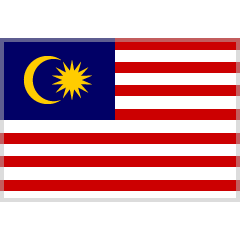

Historia


Campeones
Multicampeones
-
Michael Schummacher.

🏆 1994, 1995, 2000, 2001, 2002, 2003, 2004.
-
Lewis Hamilton.

🏆 2008, 2014, 2015, 2017, 2018, 2019, 2020.
7 Titulos mundiales.
-
Juan Manuel Fangio.

🏆 1951, 1954, 1955, 1956, 1957.
5 Titulos mundiales.
Tetracampeones
-
Alain Prost.

🏆 1985, 1986, 1989, 1993.
-
Sebastian Vettel.
🏆 2010, 2011, 2012, 2013.
-
Max Verstappen.

🏆 2021, 2022, 2023, 2024.
4 Titulos mundiales.
Tricampeones
-
Jack Brabham.
🏆 1959, 1960, 1966.
-
Jackie Stewart.
🏆 1969, 1971, 1973.
-
Niki Lauda.

🏆 1975, 1977, 1984.
-
Nelson Piquet.

🏆 1981, 1983, 1987.
-
Ayrton Senna.
🏆 1988, 1990, 1991.
3 Titulos mundiales.
Bicampeones
-
Alberto Ascari.

🏆 1952, 1953.
-
Jim Clark.
🏆 1963, 1965.
-
Graham Hill.
🏆 1962, 1968.
-
Emerson Fittipaldi.
🏆 1972, 1974.
-
Mika Häkkinen.

🏆 1998, 1999.
-
Fernando Alonso.

🏆 2005, 2006.
2 Titulos mundiales.
Monocampeones
-
Giuseppe Farina.
🏆 1950.
-
Mike Hawthorn.
🏆 1958.
-
Phil Hill.

🏆 1961.
-
John Surtees.
🏆 1964.
-
Denny Hulme.

🏆 1967.
-
Jochen Rindt.
🏆 1970.
-
James Hunt.
🏆 1976.
-
Mario Andretti.
🏆 1978.
-
Jody Scheckter.

🏆 1979.
-
Alan Jones.

🏆 1980.
-
Keke Rosberg.
🏆 1982.
-
Nigel Mansell.
🏆 1992.
-
Damon Hill.
🏆 1996.
-
Jacques Villeneuve.

🏆 1997.
-
Kimi Räikkönen.
🏆 2007.
-
Jenson Button.
🏆 2009.
-
Nico Rosberg.
🏆 2016.
1 Titulo mundial.
Escuderias Campeonas
-
🥇 Ferrari
🏆 16 titulos.
1961, 1964, 1975, 1976, 1977, 1979, 1982, 1983, 1999, 2000, 2001, 2002, 2003, 2004, 2007, 2008.
-
🥈 Williams
🏆 9 titulos.
1980, 1981, 1986, 1987, 1992, 1993, 1994, 1996, 1997.
-
🥉 Mclaren
🏆 9 titulos.
1974, 1984, 1985, 1988, 1989, 1990, 1991, 1998, 2024.
-
Mercedes
🏆 8 titulos.
2014, 2015, 2016, 2017, 2018, 2019, 2020, 2021.
-
Lotus
🏆 7 titulos.
1963, 1965, 1968, 1970, 1972, 1973, 1978
-
Red Bull
🏆 6 títulos.
2010, 2011, 2012, 2013, 2022, 2023.
-
Cooper
🏆 2 titulos.
1959, 1960.
-
Brabham
🏆 2 titulos.
1966, 1967.
-
Renault
🏆 2 titulos.
2005, 2006.
-
Vanwall
🏆 1 titulo.
1958.
-
BRM
🏆 1 titulo.
1962.
-
Mantra
🏆 1 titulo.
1969.
-
Tyrrell
🏆 1 titulo.
1969.
-
Benetton
🏆 1 titulo.
1995.
-
Brawn
🏆 1 titulo.
2009.
Circuitos historicos
Al hablar de circuitos históricos debemos diferenciar entre aquellos que aún sigen vigentes en el calendario y aquellos que no. En este caso se abordan los últimos, aquellos que albergaron al menos 10 veces la máxima categoria.
Hockenheimring
.png)
Longitud: 4,574 km (2002).
Descripción: Es un autódromo localizado en las cercanías de Hockenheim,
Alemania.
Sufrió varias reformas, la última de ellas en 2002.
Periodo en F1: 1970, 1977-1984, 1986–2006, 2008, 2010, 2012, 2014, 2016, 2018-2019.
Cantidad de GPs albergados: 37.
Autodromo Juan y Oscar Gálvez

Longitud: 4,260 km (Circuito n°6)
Descripción: Es un circuito permanente ubicado en la ciudad autónoma de Bs. As. que cuenta con múltiples variantes, algunas de ellas utilizadas por la F1 como la n°2, n°6, n°9 y n °15.
Periodo en F1: 1952-1960, 1972-1981, 1995-1998.
Cantidad de GPs albergados: 20.
Nordschleife

Longitud: 20,854 km.
Descripción: Es el trazado largo del autódromo de Nürburgring, situado en los
bosques de la región de Eifel, Alemania.
Es el autódromo más largo del mundo con una longitud de 20 kilómetros.
Periodo en F1: 1951–1954, 1956–1958, 1961–1969, 1971–1976.
Cantidad de GPs albergados: 22.
Nürburgring

Longitud: 5.148 km. (2002)
Descripción: Nürburgring es un autódromo ubicado alrededor del pueblo de Nürburg, Alemania. Entre 1981 y 1984, se reconstruyó el circuito, en parte sobre el antiguo trazado de Südschleife, con una longitud reducida a 4,5 km.
Periodo en F1: 1984–1985, 1995–2007, 2009, 2011, 2013, 2020.
Cantidad de GPs albergados: 19.
Kyalami

Longitud: 4.529 km (1990)
Descripción: Es un autódromo situado en Gauteng, Sudáfrica.
Fue reformado a
comienzos de 1990.
Periodo en F1: 1967–1980, 1982–1985, 1992–1993.
Cantidad de GPs albergados: 20.
Watkins Glen
.png)
Longitud: 5.430 km (1992)
Descripción: Es un autódromo ubicado en el poblado de Watkins Glen, Schuyler, Nueva York, Estados Unidos. En el año 1992 llega la remodelación definitiva, con dos variantes: una corta 3.950 metros y una más larga 5.430 metros.
Periodo en F1:1961–1980.
Cantidad de GPs albergados: 20.
Sepang 

Longitud: 5.543 km
Descripción: Es un autódromo ubicado en Sepang, Malasia, unos 40 km al sur de la
ciudad de Kuala Lumpur.
El Circuito Internacional de Sepang fue finalizado el año 1998.
Periodo en F1:1999–2017.
Cantidad de GPs albergados: 19.
Indianápolis

Longitud:4.192 km (road)
Descripción: Es un autódromo situado en Indianápolis, estado de Indiana, Estados Unidos. Es conocido por ser sede de las 500 Millas de Indianápolis. Posee el histórico óvalo y un circuito mixto (road).
Periodo en F1:1950-1960 (óvalo), 2000-2007 (road).
Cantidad de GPs albergados: 19.
Magny-Cours

Longitud: 4.422 km
Descripción: Es un autódromo situado en Francia, en las cercanías de las localidades de Magny-Cours y Nevers.
Periodo en F1: 1991–2008.
Cantidad de GPs albergados: 18.
Paul Ricard

Longitud: 5,842 km.
Descripción: Es un autódromo situado en Le Castellet en la región de Provenza-Alpes-Costa Azul, Francia.
Periodo en F1: 1971, 1973, 1975–1976, 1978, 1980, 1982–1983, 1985–1990, 2018-2019, 2021-2022.
Cantidad de GPs albergados: 18.
Brands Hatch

Longitud: 3.916 km.
Descripción: Es un autódromo ubicado en West Kingsdown en el condado de Kent en Inglaterra, Reino Unido.
Periodo en F1: 1964, 1966, 1968, 1970, 1972, 1974, 1976, 1978, 1980, 1982-1986.
Cantidad de GPs albergados: 14.
Estoril 

Longitud: 4,36 km.
Descripción: Es un autódromo construido en 1972 en una meseta rocosa cerca de Estoril, Portugal.
Periodo en F1: 1984–1996.
Cantidad de GPs albergados: 13.
Adelaide

Longitud: 3,780 km
Descripción: Es un circuito callejero ubicado en Adelaida, Australia.
Posee un circuito corto y uno largo, siendo el último el utilizado por la F1
Periodo en F1: 1985-1995.
Cantidad de GPs albergados: 11.
Reims-Gueux

Longitud: 8.372 km.
Descripción: Es un circuito de carreras semipermanente ubicado al sudoeste de la ciudad de Reims, Francia, utilizado en distintas configuraciones desde 1926 hasta 1972.
Periodo en F1: 1950–1951, 1953–1954, 1956, 1958–1961, 1963, 1966.
Cantidad de GPs albergados: 11.
Circuito Nelson Piquet

Longitud: 8.372 km.
Descripción: Fue un autódromo localizado en el barrio de Jacarepaguá de Río de
Janeiro, Brasil.
El circuito se construyó en 1978 en terrenos pantanosos que habían sido acondicionados. Se
demolió a fines de 2012.
Periodo en F1: 1978, 1981–1989.
Cantidad de GPs albergados: 10.
Zolder 

Longitud: 4.262 km.
Descripción: Es un autódromo situado en Heusden-Zolder, Bélgica. Fue construido en 1963 y acogió el Gran Premio de Bélgica de Fórmula 1 en 10 ocasiones. Perdió su plaza luego de la remodelación del circuito de Spa-Francorchamps.
Periodo en F1: 1973, 1975–1982, 1984.
Cantidad de GPs albergados: 10.